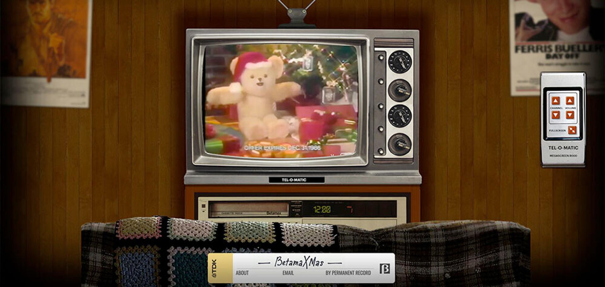
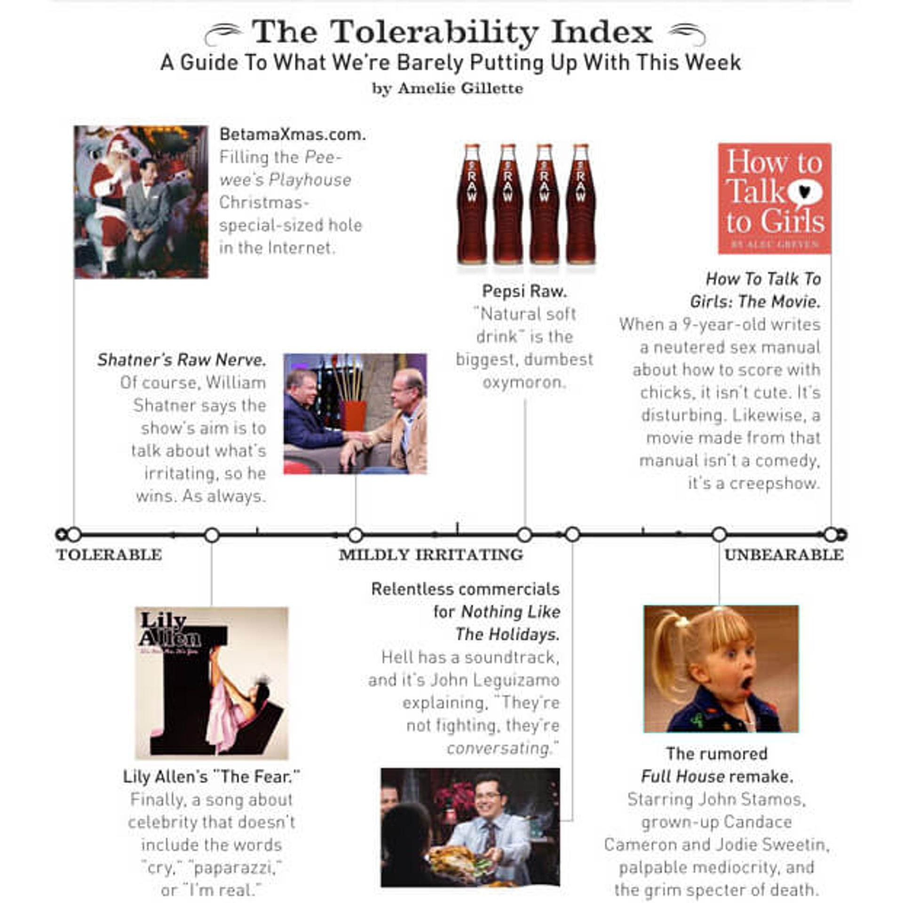
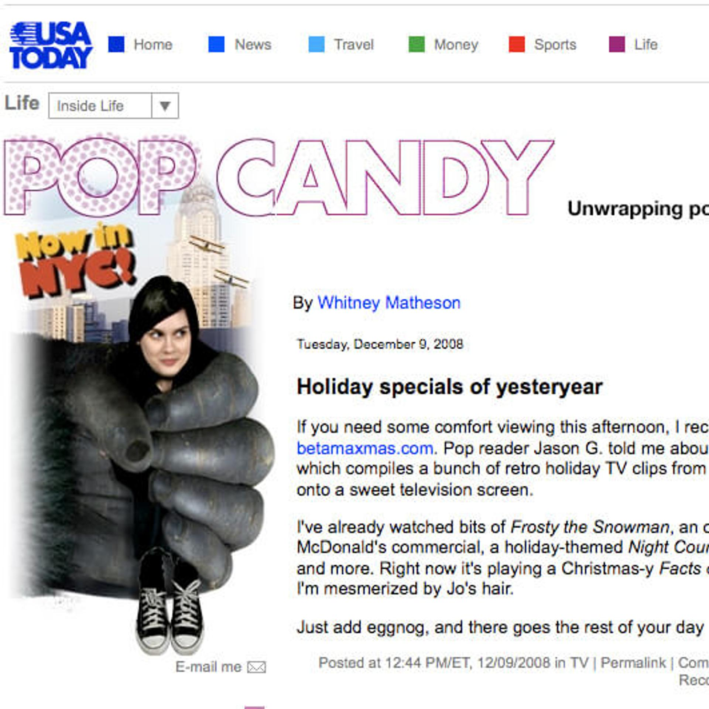
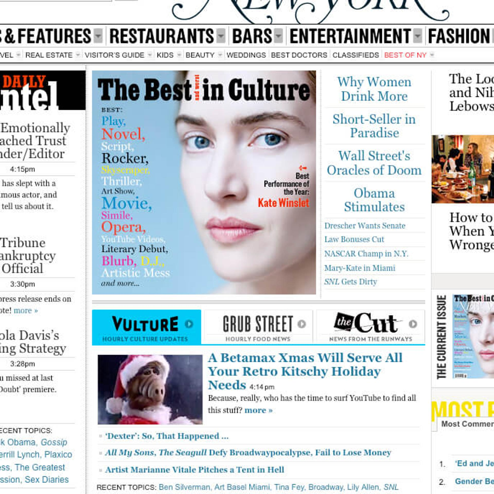

BetamaXmas

Betamaxmas lets you watch holiday television from the 1980’s in the basement. The site stemmed from an idea of "what if Tivo could provide VoD going back into the 80’s?" .
I built it in 2005 using Flash & PHP, because that’s what people used to build websites with in ancient times.
In 2013, it got a facelift to responsive HTML and JavaScript. Betamaxmas was featured by:
- The Onion’s Best Things of the Week list
- the Atlantic
- Laughing Squid
- Gawker
- and a text message from my mom’s friend, Vicky.

The Onion
Vulture
USA Today